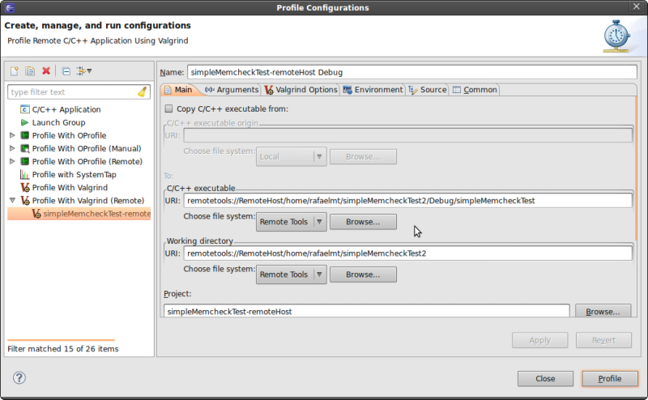

| Remote Valgrind | ||
|---|---|---|
|
|
|
|
| Using Helgrind | Special Cases | |
You can profile remote projects just as local ones. This can be useful when developing an application for a different architecture.
To run Valgrind remotely, right-click a remote c/c++ project and navigate to "Profiling Tools", then "Profile Configurations". In the new window, double-click the Profile with Valgrind (remote) profile configuration.
In the main tab, click "Browse" under "C/C++ executable" to choose the binary that will be executed. The same tool configurations for local projects apply to remote ones.

After configuring the profile, click the Profile button to launch the profile. Results will be displayed in the same Valgrind view previously described.
|
|

|
|
| Using Helgrind | Special Cases |